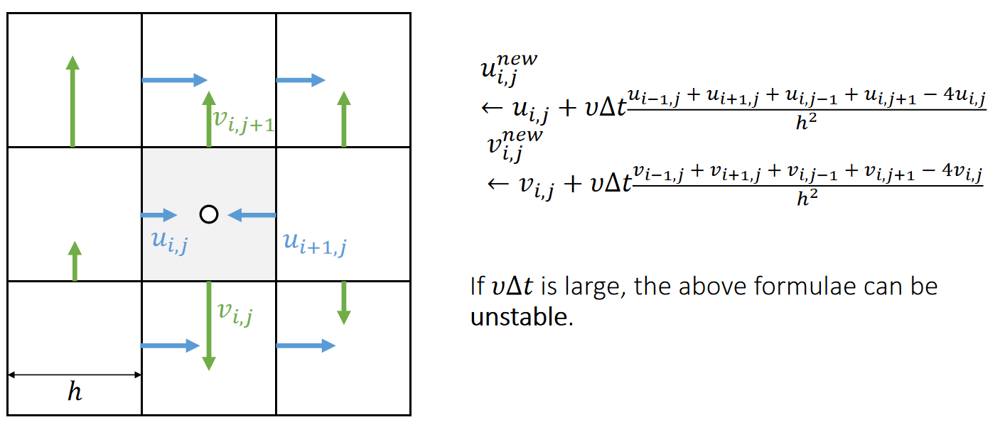
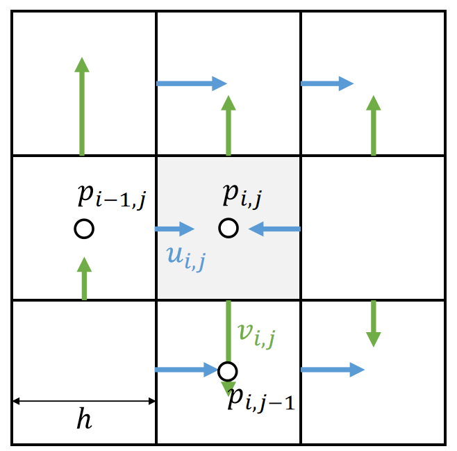

P18
Incompressible, Viscous Navier-Stokes Equations
材料导数
材料导数就是“流体微团所经历的真实变化率”，它是将牛顿第二定律应用于流动流体时自然出现的关键算子，是连接流体力学中欧拉描述与拉格朗日描述的桥梁。
$$ \frac{D\phi}{Dt} = \underbrace{\frac{\partial \phi}{\partial t}} _ {\text{局部导数}} + \underbrace{(\mathbf{u} \cdot \nabla) \phi} _ {\text{对流导数}} $$
- ∂φ/∂t：局部导数。固定点，随时间的变化。
- (u · ∇)φ：对流导数。固定时间，随空间运动的变化。速度 u 越大，或者物理量梯度 ∇φ 越大，这项贡献就越大。
局部导数
在空间某个固定点上，物理量随时间的变化率。它只反映流场在该点的不定常性。数学上就是偏导数 ∂/∂t。
例子：你坐在河岸边一个固定的岩石上，测量河水温度。如果温度计读数随时间增加，那是因为流经该点的水本身在变热（比如太阳照射），这就是局部温度变化。
对流导数
由于流体微团运动到流场中不同位置，而该位置物理量的空间分布不均匀，导致微团自身属性发生的变化。它反映了流场的空间不均匀性和微团的运动速度。
例子：你坐在一艘随河水漂流的小船上，手里拿着温度计。即使河水在每一点的温度不随时间变化（定常流），但如果你从冰冷的山区漂到温暖的下游，你测得的温度也会上升。这个变化就是因为你（流体微团）移动到了温度不同的地方。
材料导数就是这两种变化的总和。
P19
NS方程有很多变种，这是其中一种
材料导数定义：
$$
\frac{D\boldsymbol{u}}{Dt} = \frac{\partial\boldsymbol{u}}{\partial t} + \boldsymbol{u} \cdot \nabla\boldsymbol{u}
$$
NS方程：
$$ \rho\frac{D\boldsymbol{u}}{Dt} = -\nabla p + \mu\Delta\boldsymbol{u} + \boldsymbol{f} $$
NS Equation Fomulation
合并材料导数公式与 NS 方程，得：

✅ 这是一个描述了速度场的公式，它可以告许你速度如何更新。
✅ 第一项代表重力。有时也把所有的外力统一表达为 \(g\).
✅ 第二项 advection 描述速度的流动。
✅ 第三项 diffusion 的目的是粘滞。\(\Delta\) 不是指增量，而是指 Laplace.
✅ 第四项限制流体不可压。
Method of Characteristics: solving a long partial differential equation (PDE) in steps
- Step 1: Update \(\mathbf{u}\) by solving \(∂\mathbf{u}∕∂t=\mathbf{g}\)
- Step 2: Update \(\mathbf{u}\) by solving \(∂\mathbf{u}∕∂t=−(\mathbf{u}\cdot ∇)\mathbf{u}\)
- Step 3: Update \(\mathbf{u}\) by solving \(∂\mathbf{u}∕∂t=υ∆\mathbf{u}\)
- Step 4: Update \(\mathbf{u}\) by solving \(∂\mathbf{u}∕∂t=−\frac{1}{\rho} ∇\mathbf{p}\)
✅ Operator splitting：把偏微分方程分解几个小块，依次轮流优化每一小块。
P20
Step 1: External Acceleration
The Update of \(\mathbf{u}\) by \(∂\mathbf{u}∕∂t=\mathbf{g}\) is straightforward, just add acceleration to \(u\) and \(v\).

✅ \(v_{i,j}\)代表向下的速度，对所有格子更新\(v_{i,j}\).
✅ 其它外部速度同理。
P21
Step 2: Advection
✅ Advection,代表流动。即速度会跟着粒子移动，基于欧拉的方法才需要考虑这个问题。因为固定的格子无法描述水的流动。
✅ 基于拉格朗日的方法，变量定义在粒子上，天然满足这个特点。
方法一：数学模型
Next we need to update \(\mathbf{u}\) by solving \(∂\mathbf{u}∕∂t=−(\mathbf{u}\cdot ∇)\mathbf{u}\).

| $$(\mathbf{u} \cdot ∇)\mathbf{u} =u\cdot \frac{∂u}{∂x} +v\cdot \frac{∂v}{∂\mathbf{y}} $$ |
|---|
Solving this in an Eulerian way can be a source of instability.
✅ Eulerian way： \(\mathbf{u}^{\mathrm{new} }=\frac{\partial u}{\partial t} ·Δt＋\mathbf{u}\) 不稳定
✅ 由当前状态计算下一刻的速度，显式积分。
To solve this problem, we come to realize that advection means to carry physical quantities by velocity.
P22
方法二: Semi-Lagrangian Method
The solution is to trace a virtual particle backward over time.
特点：非常稳定，但数值粘性非常高。
✅ 做模拟通常更在乎稳定而不是误差，此方法更稳定，但会有模糊的 artifacts.
✅ 例如要求\(\mathbf{x}_0\)的速度，倒推哪个粒子会运动到\(\mathbf{x}_0\)处；假设短时间内速度不变，根据当前速度猜测上一帧的位置。因此找到\(\mathbf{x}_1\)，用\(\mathbf{x}_1\)的速度来更新\(\mathbf{x}_0\)的速度。
✅ 怎么计算每个\(\mathbf{x}\)的\(\mathbf{u}\)?答：双线性插值方法、

-
Define \(\mathbf{x}_0←(i−0.5, j)\)
-
Compute \(\mathbf{u}(\mathbf{x}_0)\)
-
\(\mathbf{x}_1←\mathbf{x}_0−∆t \mathbf{u}(\mathbf{x}_0)\)
-
Compute \(\mathbf{u}(\mathbf{x}_1)\) 双线性插值
-
\(u_{i,j}^{new}←u(\mathbf{x}_1)\)
\(\mathbf{u}\) 和 \(u\) 都是表达某个点的速度，它们的区别在于：
\(\mathbf{u}\) 描述空间点 \(\mathbf{x}\) 的速度，是 2D 速度，是通过相邻格子插值得来的。
\(u\) 描述空间点 \(\mathbf{x}\) 在水平方向上的速度，是 1D 的。向左或向右，由于 \(\mathbf{x}_0\) 定义在竖直墙上，所以只取水平方向的速度。
Note that if the velocities are staggered, we need to do staggered bilinear interpolation.
P23
✅ 对每个墙上的速度都以相同的方式更新。
直接向前推一个时间步来取 \(\mathbf{x}_1\) 的位置，可能是非常不准的，用这个 \(\mathbf{x}_1\) 的速度作为 \(\mathbf{x}\) 的速度也很不合适。

因此衍伸出不同的方法来确定 \(\mathbf{x}_1\) 位置及 \(\mathbf{x}\) 速度。
这是一个 Initial value problem (ODE)，以下是显式时间积分的方法：
- Forward Euler ("RK1")
p -= dt * velocity(p)
即上文提到的方法
- Explicit Midpoint ("RK2")
p_mid = p - 0.5 * dt * velocity(p)
p -= dt * velocity(p_mid)
- RK3
v1 = velocity(p)
p1 = p - 0.5 * dt * v1
v2 = velocity(p1)
p2 = p - 0.75 * dt * v2
v3 = velocity(p2)
p -= dt * (2 / 9 * v1 + 1 / 3 * v2 + 4 / 9 * v3)
一般RK2就够用了。
P24
- We could also subdivided the time step for better tracing.
✅ 反推找\(\mathbf{x}_1\)时 step 细一点，这样能找得准一点

方法三：BFECC
方法二中多次使用双线性插值，导致结果变糊(表现在流体上就是看上去很粘)
BFECC: Back and Forth Error Compensation and Correction
- \(\mathbf{x}^* = \text{SL}(\mathbf{x}, \Delta t)\)
- \( \mathbf{x}^{** }= \text{SL} ( \mathbf{x} ^ {*}, -\Delta t) \)
- Estimate the error \(\mathbf{x}^{\text{error}} = \frac{1}{2}(\mathbf{x}^{**} - \mathbf{x})\)
- Apply the error \(x^{\text{final}} = \mathbf{x}^* + \mathbf{x}^{\text{error}}\)
公式中的 SL 代表方法二
Be careful: need to prevent overshooting，因此方法之后要接 error 的截断保护
其它方法
结合粒子的方法
P25
Step 3: Diffusion
Next we need to update \(\mathbf{u}\) by solving \(∂\mathbf{u}∕∂t=\upsilon ∆\mathbf{u}\).
根据公式更新即可。

✅ 分别对\(u\)和 \(v\) 做 laplacian.
✅ 注意公式中\(v\)和\(\nu \)的不同，后者为粘滞系数。
The process of applying Laplacian smoothing is called diffusion.
✅ Laplace的本质是与邻居做平均。
We could also use even smaller sub-steps…
P27
Step 4: Pressure Projection
通过压强实现散度为0(流体不可压)的效果。
Finally, we need to update \(\mathbf{u}\) by solving \(∂\mathbf{u}∕∂t=−∇\mathbf{p}\).
公式推导法
$$ u^{new} = u - \Delta t \nabla p $$
两边同时应用\(\nabla\)算子，得：
$$ \nabla \cdot u^{new} = \nabla \cdot u - \Delta t \nabla \cdot \nabla p $$
考虑不可压约束 \(\nabla \cdot u^{new}=0\)，得：
$$ \nabla \cdot \nabla p = \frac{1}{\Delta t} \nabla \cdot u $$
即Poisson's Equation.
离散化得：
$$ 4p_{i,j}−p_{i−1,j}−p_{i+1,j}−p_{i,j−1}−p_{i,j+1}= \\ \\ ℎ(−u_{i+1,j}−v_{i,j+1}+u_{i,j}+v_{i,j}) $$
直观理解法

同样在墙上定义带方向的压强
Staggering makes this very straightforward:
$$ u_{i,j}^{new}←u_{i,j}−\frac{∆t}{ℎ}(p_{i,j}−p_{i−1,j}) $$
$$ v_{i,j}^{new}←v_{i,j}−\frac{∆t}{ℎ}(p_{i,j}−p_{i,j−1}) $$
✅ \(u\)和\(v\)分别为两个方向上的速度。
But what is \(\mathbf{p}\)?
P28
压强的来源：流体不可压
The pressure is caused by incompressibility.
✅ 压强的原因：由于流体不可压缩、对于流体的压力会传导到每个点上。
✅ 每个点都有压强，虽然压强未知，但可以根据不可压条件构造方程组。
✅ 不可压的表现为有压强，产生的效果是散度为0．
In other words, after this update by pressure, we should achieve:
| $$∇\cdot \mathbf{u}^{new}=0$$ |
|---|
which means
| $$u_{i+,j}^{new}+v_{i,j+1}^{new}−u_{i,j}^{new}−v_{i,j}^{new}=0$$ |
|---|
$$ \Downarrow $$
| $$ \begin{matrix}u_{i+1,j}−\frac{(p_{i+1,j} − p_{i,j})}{ℎ}+v_{i,j+1}−\frac{(p_{i,j+1}−p_{i,j})}{ℎ} \\−u_{i,j}−\frac{(p_{i,j} − p_{i−1,j})}{ℎ} −v_{i,j}−\frac{(p_{i,j}−p_{i,j−1})}{ℎ}=0 \end{matrix}$$ |
|---|
P29
The pressure is caused by incompressibility. Eventually, we get a Poisson equation:
$$ 4p_{i,j}−p_{i−1,j}−p_{i+1,j}−p_{i,j−1}−p_{i,j+1}= \\ \\ ℎ(−u_{i+1,j}−v_{i,j+1}+u_{i,j}+v_{i,j}) $$
with boundary conditions:
$$ \text{Dirichlet boundary (open) } p_{i−1,j}=P \\ \text{Neumann boundary (close) } p_{i−1,j}=p_{i,j}$$
Once we solve \(\mathbf{p}\), we update \(\mathbf{u}\) and done.
P30
After-Class Reading
Jos Stam. 1999. Stable Fluids. TOG (SIGGRAPH).
✅ 这篇论文主要讨论了step2，但也包含了全部过程
求解压强 \(p\)
Poisson's Equation 构成了一个巨大的线性系统
$$ A_x = b $$
其中 \(A\) 为 \(p\) 的系数构成的矩阵，\(x\) 为未知量 \(p\)，\(b\) 为已知量 \(u\)
压强 Laplacian 算子的离散化

$$ (\nabla \cdot \nabla p) _ {i,j} = \frac{1}{\Delta x^2}(-4p _ {i,j} + p _ {i+1,j} + p _ {i-1,j} + p_{i,j-1} + p_{i,j+1}) $$
解泊松方程
\(A\) 的特点：稀疏、对称、正定
Krylov-Subspace solvers：conjugate gradients + damped Jacobi smoothing + PARDISO
$$ \mathbf{r}_0 = \mathbf{b} - \mathbf{A} \mathbf{x}_0 $$
$$ \mathbf{p}_0 = \mathbf{r}_0 $$
$$ \mathbf{k} = 0 $$
while True:
$$
\alpha_k = \frac{\mathbf{r}_k^T \mathbf{r}_k}{\mathbf{p}_k^T \mathbf{A} \mathbf{p}_k}
$$
$$ \mathbf{x}_{k+1} = \mathbf{x}_k + \alpha_k \mathbf{p}_k $$
$$ \mathbf{r}_{k+1} = \mathbf{r}_k - \alpha_k \mathbf{A} \mathbf{p}_k $$
if \(||\mathbf{r}_{k+1}||\) is sufficiently small, break
$$ \beta_k = \frac{\mathbf{r} _ {k+1}^T \mathbf{r} _ {k+1}}{\mathbf{r} _ k ^ T \mathbf{r} _ k} $$
$$ \mathbf{p} _ {k+1} = \mathbf{r} _ {k+1} + \beta_k \mathbf{p} _ k $$
$$ k = k + 1 $$
return \(\mathbf{x}_{k+1}\)
\(A\) 的 condition 数越大，迭代法收敛越慢
让 condition 更小的方法：把问题变为
$$ M^{-1}Ax = M^{-1}b $$
\(M\) 是一个与 \(A\) 近似但易于求逆的矩阵
Multigrid 求 M

本文出自CaterpillarStudyGroup，转载请注明出处。
https://caterpillarstudygroup.github.io/GAMES103_mdbook/